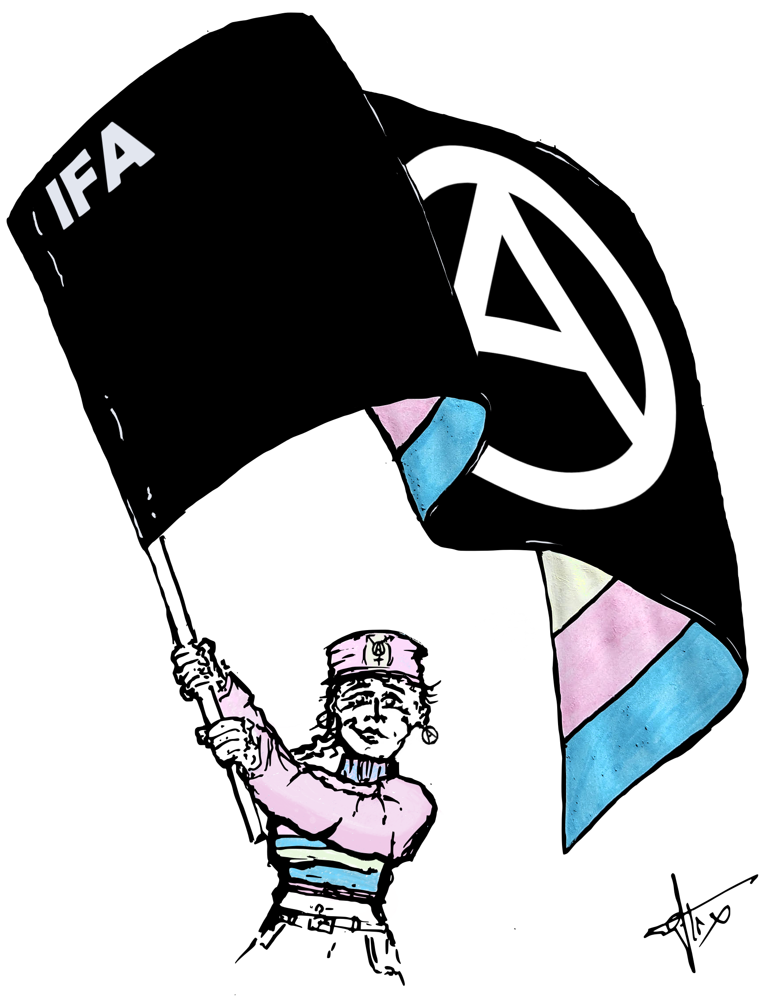
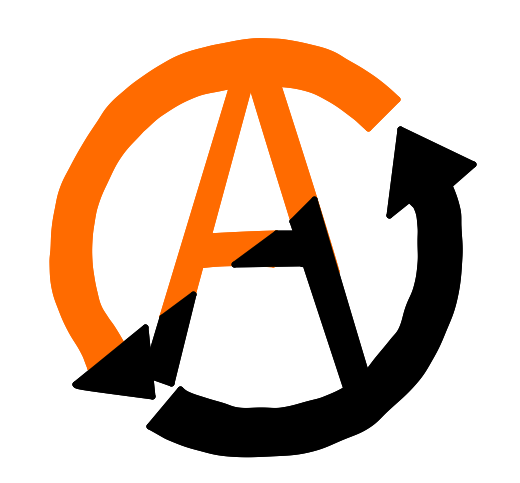
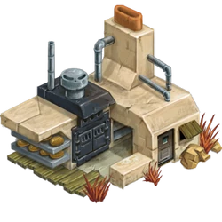

<section class="js-section_title header_slider theme-white">

	

<div  class="header_slider--header">
	<div class="media">
		<div class="no_phone">
			
	
		</div>
	</div>
	<div class="right" style="z-index: 1 !important;">

		<div class="title">La liaison commune de Lyon </div>

		<div class="link">
			<a href="mailto:communedelyon@federation-anarchiste.org"
				class="btn btn_black"
				target="">
				Envoyer un mail à communedelyon@federation-anarchiste.org
				<span class="icon-Arrow"></span>
			</a>
		</div>
		<div class="description" style="text-shadow: -2px -2px 0 #ffffff, 2px -2px 0 #ffffff, -2px 2px 0 #ffffff, 2px 2px 0 #fff;">
			
			Nous déclarons le lancement d’une nouvelle liaison de la Fédération Anarchiste à Lyon. Elle est à l’initiative de militant.es anarchistes locaux.les conscient.es de la nécessité de garder une porte d’entrée à la Fédération et surtout à l’anarchisme, 
			par le biais de l’autogestion et de l’action directe comme moyen d’action. 
		
		</div>
		<div class="subtitle" style="color : #cf7edd !important;text-shadow: -1px -1px 0 #ffffff, 1px -1px 0 #ffffff, -1px 1px 0 #ffffff, 1px 1px 0 #ffffff;">Déclaration d’intention Liaison Fédération Anarchiste de la Commune de Lyon</div>
			<div class="phone">

			{% include "Animation_reseau.html" %}
		</div>
		<div class="description" style="color : #cf7edd !important;text-shadow: -1px -1px 0 #ffffff, 1px -1px 0 #ffffff, -1px 1px 0 #ffffff, 1px 1px 0 #ffffff;">
			Nous sommes pour la plupart fédéré.e.s individuellement à la Fédération et nous souhaitons à l’avenir constituer des groupes par activités et affinités.
			Nous croyons à la Synthèse – la collaboration des tendances diverses et variées de l’anarchisme.<br><br> 

			Nous souhaitons lutter contre le sectarisme militant qui gangrène aujourd’hui la plupart des organisations.<br><br> 
			Pour ce faire nous souhaitons participer aux associations locales et faire du concret, dans une volonté de solidarité et d'entraide.  <br>  
		</div>

		<div class="subtitle" style="color : #cf7edd !important;text-shadow: -1px -1px 0 #ffffff, 1px -1px 0 #ffffff, -1px 1px 0 #ffffff, 1px 1px 0 #ffffff;">
			Une liaison pour rentrer en contradiction avec le pouvoir politique Etatique et économique	
		</div>
		
		<div class="description" style="color : #cf7edd !important;text-shadow: -1px -1px 0 #ffffff, 1px -1px 0 #ffffff, -1px 1px 0 #ffffff, 1px 1px 0 #ffffff;">
			Une Liaison au croisement des activités et des idées.
			Une coopération de nos radicalités militantes à travers l’outil fédéral dans un but commun de lutte contre l’Etat et les autoritarismes.
		</div>

		<div class="subtitle" style="color : #cf7edd !important;text-shadow: -1px -1px 0 #ffffff, 1px -1px 0 #ffffff, -1px 1px 0 #ffffff, 1px 1px 0 #ffffff;">
		
			Vers le réseau autogestionnaire
		</div>

		<div class="description" style="color : #cf7edd !important;text-shadow: -1px -1px 0 #ffffff, 1px -1px 0 #ffffff, -1px 1px 0 #ffffff, 1px 1px 0 #ffffff;">
			Nous souhaitons être en lien avec les organisations de lutte, de propagande et des organes économique et sociaux autogérés. Qu’elles soient radicales ou non. La liaison est un outil de mutualisation de nos ressources et de nos affinités.
		</div>

		<div class="subtitle" style="color : #cf7edd !important;text-shadow: -1px -1px 0 #ffffff, 1px -1px 0 #ffffff, -1px 1px 0 #ffffff, 1px 1px 0 #ffffff;">
		
			Nos intentions personnelles et militantes
		</div>

		<div class="description" style="color : #cf7edd !important;text-shadow: -1px -1px 0 #ffffff, 1px -1px 0 #ffffff, -1px 1px 0 #ffffff, 1px 1px 0 #ffffff;">
			La liaison est composée de membres ayant des affinités diverses et variées.
			Elle est là pour nous, elle nous permet de nous cultiver, de nous épanouir et de militer à la façon de tous.tes à chacun.es.<br><br> 
			C’est aussi l’occasion de donner vie à des projets musicaux engagés, d’arts et d’écritures libres. Dans lesquels les neuro-atypies et l’identité de genre aient leur place.
		</div>

		<div style="text-align: center;color : #cf7edd !important; text-shadow: -1px -1px 0 #ffffff, 1px -1px 0 #ffffff, -1px 1px 0 #ffffff, 1px 1px 0 #ffffff; "><strong></strong>								
		« A chacun.e selon ses besoins,
		de chacun.e selon ses moyens ! »
		</div>
		<div style="text-align: center;color : #cf7edd !important; text-shadow: -1px -1px 0 #ffffff, 1px -1px 0 #ffffff, -1px 1px 0 #ffffff, 1px 1px 0 #ffffff;"><strong></strong>								
		Ainsi, célébrons chacune de nos luttes.
		</div>
		


		<script type="module">
		
		import { createTimeline, utils, waapi } from 'https://esm.sh/animejs';


		const Animation_first = createTimeline({
		loop: true,
		alternate: true,
		delay: 500,
		})
		.add('.first',   { x: '10rem'})
		.add('.first',   { scale: ['1', '0'] },1500);


		const Animation_second = createTimeline({
		loop: true,
		alternate: true,
		delay: 1000,
		})
		.add('.second', { x: '10rem' })
		.add('.second', {scale: ['1', '0'] }, 1500);

		const Animation_last = createTimeline({
		loop: true,
		alternate: true,
		delay: 1500,
		})
		.add('.last', { y: '15rem' })
		.add('.last', {scale: ['1', '0'] }, 1500);


		</script>
		<div class="phone">
			<div class="title">Notre localisation et nos activités</div>
			<div class="docs-demo-html">
			
				<div id="draggables" class="grid" style="padding: 0 0 0 0 !important;">
				<div class="example">
						
						<div class="example-content example-content-vertical transformed-example" style="background-image: url(https://thumbs.dreamstime.com/b/lyon-map-very-beautiful-city-france-306653923.jpg); background-size: contain; border: 15px dashed black">
						<div class="margin margin-overlay" style="box-shadow: 0 0 0 1px rgba(255, 255, 255, 0);"></div>
							<div id="container-no-scroll" class="container margin">
									
										<div class="grid">

										
											<div class="draggable square last" style="background-color: #cf767600;">
												
												
												
											</div>	
											<div class="draggable square second" style="background-color: #d195db00;">
												
												
												
											</div>
											<div class="draggable square first" style="background-color: #cfcecd00;">
												
												
											</div>

											<a href="articles/Boulangerie_ile.html">
												<div class="square" style="background-color: #df9f6a8f; transform: translateX(10rem) translateY(-5rem);border: 5px dashed #db7929; ">
													
												</div>
											</a>
											
											<a href="Activités_locales.html">
												<div class="square" style="background-color: #bdb0b0cb; transform: translateX(10rem) translateY(-15rem); border: 5px dashed #837878; ">
													
												</div>
											</a>	
											
											<a href="articles/Proposition_10_sept.html">
												<div class="square" style="background-color: #c991cecb; transform: translateY(-10rem); border: 5px dashed #df5cebcb;">
													
												</div>
											</a>

											
											<div class="square description" style="font-size: large;text-shadow: -2px -2px 0 #ffffff, 2px -2px 0 #ffffff, -2px 2px 0 #ffffff, 2px 2px 0 #fff; background-color: #c991ce00; transform: translateX(15rem) translateY(-25rem);  margin-bottom: 0; ">
												Syndicalisme CNT-SO-AIT
											</div>
											<div class="square description" style="font-size: large;text-shadow: -2px -2px 0 #ffffff, 2px -2px 0 #ffffff, -2px 2px 0 #ffffff, 2px 2px 0 #fff;background-color: #c991ce00; transform: translateX(15rem) translateY(-25rem); margin-bottom: 0;">
												Boulangerie autogéreé à l'île égalité
											</div>
											<div class="square description" style="font-size: large;text-shadow: -2px -2px 0 #ffffff, 2px -2px 0 #ffffff, -2px 2px 0 #ffffff, 2px 2px 0 #fff;background-color: #c991ce00; transform: translateX(5rem) translateY(-25rem); margin-bottom: 0; ">
												Intersectionnalité et 
												confédéralisme
											</div>
											<div class="square description" style="font-size: large;text-shadow: -2px -2px 0 #ffffff, 2px -2px 0 #ffffff, -2px 2px 0 #ffffff, 2px 2px 0 #fff;background-color: #c991ce00; transform: translateX(10rem) translateY(-45rem);  margin-bottom: 0;">
												<strong>VILLEURBANNE & LYON</strong>
											</div>
											<div class="square description" style="font-size: large;text-shadow: -2px -2px 0 #ffffff, 2px -2px 0 #ffffff, -2px 2px 0 #ffffff, 2px 2px 0 #fff;background-color: #c991ce00; transform: translateY(-40rem);  margin-bottom: 0;">
												<strong>& PARTOUT...</strong>
											</div>
										</div>
									
								
								
							</div>
						</div>
					</div>
				</div>

			</div>	
		</div>

	</div>
</div>


</section>